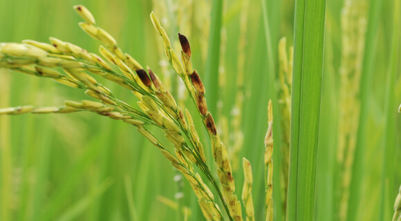

Agriculture
Plant diseases are a severe threat to the entire production. Therefore, it is essential for farmers to effectively deal with them and check them with the help of timely prevention. Depending on the agricultural area size, this task can be difficult, especially since the list of harmful crop diseases is quite impressive. Modern technologies come to the aid of farmers. Crop Monitoring allows you to identify dangerous areas and apply an individual approach to yield treatment, significantly increasing disease control effectiveness.
Types Of Crop Diseases & Their Causal Agents
Traditionally, there are several types of crop disease: abiotic (also known as non-infectious) and biotic (infectious).
Unfavorable environmental conditions often generate non-communicable diseases. Examples are low or high temperature, excess, or lack of moisture. Also, infections are usually caused by harmful impurities in the air. They can accumulate due to the presence of nearby chemical or metallurgical plants. Usually, the unhealthy physicochemical composition of the soil is the disease source. The latter factor is often the result of poor-quality treatment of fields with some herbicides. These examples prove the importance of sustainable agriculture not only for protecting the environment but also for a profitable business.
Even an unfavorable light regime can cause negative consequences, especially for plants produced in greenhouses. Toxins that some embryophytes (higher plants) and fungi release into the soil can also be causal agents of crop diseases.
Infections’ causal agents include:
- bacteria;
- viruses;
- fungi;
- nematodes;
- parasitic plants.
We will consider relevant crop diseases and their causative agents in the following sections.

Crop Diseases Caused By Bacteria
Among the most common infections in agriculture are crop diseases caused by bacteria. In this regard, the prevention and control of this kind of disease are pretty tricky.
To infect the causal agent needs to get into the culture’s tissue. It occurs mainly through damaged areas, such as caused by agricultural tools, insects (fleas), or simply unfavorable weather conditions (dust, wind, heavy rain). But bacteria can also infect plants through natural holes or glands (for example, which secrete nectar).
Another feature of bacterial crop diseases is that causal agents, once in a plant or soil, can remain dormant for a long time until favorable conditions arise for them. First of all, significant temperature fluctuations and high levels of humidity act as catalysts for bacterial activity.
Symptoms Of Bacterial Crop Diseases
The main bacterial disease indications include: vascular wilting, necrosis, soft rot and tumor.
Although this type of plant disease can be identified due to its pronounced symptoms, identifying a specific causal agent
requires laboratory methods.
Common Bacterial Diseases
As noted earlier, due to a huge number of bacteria, there are many disease types. Here are some examples of the most common diseases of crop plants:
- Granville wilt exposes itself in growth retardation, wilting of the high culture’s part, and the death of roots.
- Fire blight symptoms include necrotic weeping ulcers, wilting and rolling of leaves, while the dried parts of a plant do not fall off.
- Wildfire of tobacco is widespread in the world and shows itself as yellowish-green spots on leaves.
Control Measures
It is complicated to control bacterial diseases of crop plants for several reasons: high spreading rate and protection from exposure to chemicals due to being inside the plants. Preventive measures may include using pathogen-free seeds produced in desert regions, hot water for seed treatment, soil solarization, control of plant diseases with germicidal compounds of seeds.
Also, crop diseases can be prevented by spraying. Of course, sanitary measures are imperative, which include weed control, sterilization of tools, proper waste disposal, and avoidance of cultivation in wet foliage.

Crop Diseases Caused By Fungi
Pathogenic fungi are the most typical agricultural problem. According to research, this plant disease type destroys about a third of all food crops every year. In this regard, this problem is severe both from a humanitarian and economic point of view. Like bacterial crop diseases, these infections affect plants mainly through wounds, stomata, and water pores. Also, fungal spores are often carried by gusts of wind.
Symptoms Of Fungal Crop Diseases
Often, a fungal infection is expressed in local or general necrosis. Also, crop diseases caused by fungi can interfere with the average growth or contribute to its abnormal burst, called hypertrophy. Other crop diseases symptoms include:
- spots on leaves;
- exfoliation;
- rot;
- anthracnose;
- ulcers;
- curls of leaves and warts.
Note: due to a vast number of pathogenic fungi types, the indications are very different. Therefore, timely disease detection is the most effective kind of protection.
Common Fungal Diseases
The list of crop diseases caused by fungi is pervasive, so that we will limit ourselves to just a list of some of the most common examples of crop plant diseases:
- Late blight of potato is expressed by dark green, purple or black lesions with white mold around the edges.
- Black stem rust of wheat is a dangerous disease that mainly affects cereals. It is expressed in the appearance of rust-colored sori on a plant.
- Symptoms of Coffee rust are powdery yellow-orange spots with a brown center on the lower part of leaves.
Control Measures
Preventive measures to check crop plant diseases caused by fungi are pretty varied. Key management actions include destroying plant matter containing dangerous fungi, using healthy seeds, regular crop rotation, chemical, and biological fungicides.
Crop Diseases Caused By Nematodes
Nematodes are parasitizing plants roundworms, which usually cannot be seen without special equipment. They live in the soil, and therefore mainly affect roots, tubers, and bulbs. There are over 4100 dangerous nematode species.
Symptoms Of Nematode Crop Diseases
Essentially, nematodes feed by sucking juices from plants. Because of this, plants affected by these parasites often appear dried out, as if they are suffering from drought. Other symptoms are also similar:
- yellowing;
- growth retardation;
- lack of response to fertilizers and water;
- the gradual general decline of a plant;
- reduction or even destruction of root systems.
Although nematodes need a long period to cause significant damage to a plant, they spread exceptionally rapidly. Therefore, farmers should identify crop disease in field to save the affected plants timely and prevent the disease from spreading.
Common Nematode Diseases
Diseases directly depend on the type of nematodes:
- Fusiform thickening of the stems is provoked by stem worms. The disease is expressed in the deformation of leaves, swelling of petioles, and the appearance of dark spots on tubers.
- Aphelenchoides, a disease of rice, is provoked by Aphelenchoides besseyi. Disease marks are blemishes on the tops of leaves, lack of grains, and culture depletion. The corresponding nematode
- Tylenchulus semipenetrans cause serious citrus diseases. It is characterized by the gradual death of not only leaves but also branches.
Control Measures
Parasite control involves a wide range of activities. In particular, crop rotation, improving crop disease resistance, and soil treatment with appropriate fumigants with nematicides are effective measures. You can also destroy nematodes and their eggs with hot water (about 50 degrees). However, this method of controlling crop diseases requires accuracy. You should adjust the watering time according to the temperature to not harm the plants themselves. Measures that promote plant growth are practical against individual nematodes: heavy mulch, fertigation, watering in drought, and summer and autumn steam.
Crop Diseases Caused By Virus
The most minor but most critical plant enemies are viruses and viroids (subviral contagious agents). After infection, it is almost impossible to save a plant. Therefore the effect of plant diseases on crop production is of critical importance throughout the world. In most cases, the infection spreads as a result of healthy plants with sick contact. Viruses can also spread through vegetative reproduction, through seeds, pollen, and insects. But viruses most often spread through the soil.
Symptoms Of Viral Crop Diseases
The symptoms of crop diseases caused by virus are usually divided into four types:
- malformations, such as abnormal growth of shoots, distortion of leaves and flowers;
- necrosis, wilting and the appearance of annular stripes and spots;
- dwarfism, growth retardation of both individual parts and the whole plant;
- discoloration, e.g. yellowing, and vein clearing.
Root crop diseases, which are expressed in their rotting, are a characteristic indication of the presence of a virus. However, some plants may not show symptoms and are latent carriers of a disease. Therefore, extreme vigilance is required in the fight against this infection type.
Common Viral Diseases
Among the common examples of viral diseases in crop plants:
- Tobacco mosaic manifests in dwarfism and mosaic-like patterns on leaves. The disease is widespread throughout the world and can have significant economic consequences.
- Tomato spotted wilt is accompanied by the appearance and growth of necrotic yellow rings that gradually turn reddish-brown.
- Potato spindle tuber inhibits plant growth, tubers become fusiform and shrink.
Do soil microorganisms protect against crop disease?
Yes, they do. Soil microorganisms increase immunity, protect plants from many pathogens. Moreover, if beneficial microbes are present in
the roots of a plant, it can fight pests more effectively while maintaining natural growth.
Control Of Crop Diseases Caused By Viruses
Unlike previous infections, most vegetable crop disease caused by viruses is extremely difficult to defeat, often impossible. Therefore, control, in this case, should be as effective as possible. Among the most common measures is the cultivation of resistant crops, indexing, determining the absence or virus presence that is not mechanically transmitted. The plant under study is grafted onto an indicator plant, which develops corresponding symptoms in the virus presence. Unfortunately, sometimes it is necessary to destroy infected cultures, and if large agricultural areas are affected, even to introduce quarantine to save the rest of the crop yield.
Crop Diseases Caused By Parasitic Plants
Parasitic plants are among the most dangerous plant pests in the world. With the help of particular organs, these plants settle in a host plant and satisfy at the expense of it (most often its vascular system). Although many parasites only weaken their “prey”, some can kill a plant and pose a severe economic threat to agriculture. Depending on the species, parasites can attach from one to several dozen plant species.
Common Parasitic Plants
Today, there are about 400 parasitic plant species that have a substantial impact on the ecosystem in which they exist. Let’s look at a few common examples.
Mistletoe (Viscaceae)
This semi-parasitic plant is widely represented throughout the world and is evergreen. As a parasite, mistletoe can exist on a significant number of plant species. It spreads thanks to special seeds that stick to the bird paws and are carried with them to other plants. These seeds germinate through the host plant bark and connect to its food system. Since mistletoe can parasitize a reasonably large number of plants, it can cause significant damage to cultures such as potatoes, carrots, legumes, etc.
Cuscuta spp.
Cuscuta spp. is a parasitic bindweed plant, which is very dangerous for various plants. It actively spreads, disrupts the metabolism of host plants, reduces productivity, and often leads to the death of plants. Moreover, Cuscuta spp. can be a carrier of viral plant and animal diseases. Because of all these features, the weed is a quarantine object.
Orobanche spp.
It is a dangerous root parasite without green leaves that cannot photosynthesize, and is utterly dependent on a host. For seed germination of Orobanche spp., it is required that a suitable plant is planted in the soil. Then the weed will attach to its roots and begin to receive ready-made food. The parasite leaves up to 100,000 seeds. They remain viable in the ground for over ten years while waiting for a host. All it makes Orobanche spp. a dangerous pest.
Striga spp.
This group of parasitic plants is mainly found in tropical and subtropical regions and belongs to quarantine sites. In African countries, they are classified as a pandemic since Striga spp. can destroy up to 100 percent of a plant and cause irreparable economic damage. Primarily, this herb infects cereals but can also parasitize other plants, including sugar cane. It’s spread through seeds, growing together when ripe with the root system of a host plant. These parasites are very tenacious, so re-planting of a previously infected area is possible after nine years. In regions dependent on agriculture, the Striga spp. can even lead to the migration of people.
Methods Of Controlling Crop Diseases Caused By Parasitic Plants
There are different ways of pest control. One of them is “suicidal germination,” cultivating the soil to create favorable conditions for a parasite. In the absence of a host, the germinated seeds will die.
Also, farmers actively apply herbicides to resistant crops, which prevents parasites from attaching to them. However, these drugs are pretty expensive. Therefore, it is often necessary to use manual weeding and rotation of crops that are not hosts. However, the most helpful remedy remains the use of naturally sustainable plants.
